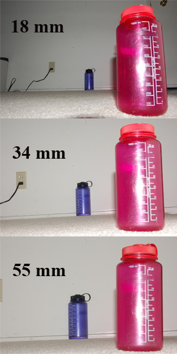

O nariz não cresceu. A distância encolheu.
A câmera frontal costuma ficar a 30 ou 40 centímetros do rosto. Nessa distância, a ponta do nariz pode estar proporcionalmente muito mais perto da lente que as orelhas. No espelho, visto de mais longe, essa diferença é pequena. Na selfie, ela pesa.
Uma câmera registra cada ponto do rosto numa projeção. Quanto mais perto um ponto está, maior ele aparece no plano da imagem. O nariz avança alguns centímetros em relação às bochechas e às orelhas; quando a câmera também está a poucos centímetros, essa vantagem vira uma ampliação perceptível.
Perspectiva, lente e distorção não são a mesma coisa
É comum colocar toda a culpa na grande-angular. Ela participa da situação, mas de um jeito indireto: um campo de visão amplo permite enquadrar o rosto inteiro mesmo com o celular muito perto. Se a câmera frontal tivesse um campo estreito, talvez aparecesse apenas um olho.
A distância focal, combinada ao tamanho do sensor, determina o field of view. Para manter o mesmo rosto preenchendo o quadro com uma lente mais longa, o fotógrafo precisa se afastar. É esse recuo que muda a perspectiva e deixa as proporções mais próximas do que estamos acostumados a ver.
Duas fotos feitas do mesmo ponto, com lentes diferentes, têm a mesma perspectiva. Se a foto mais aberta for recortada para igualar o enquadramento, as proporções coincidem. A perspectiva muda quando a câmera muda de posição.
Também existe a distorção da lente. Lentes reais podem curvar linhas ou esticar regiões próximas das bordas. Fabricantes corrigem parte disso por software, mas a correção não apaga a perspectiva criada por uma câmera colada no rosto.

Mexa na distância
O desenho abaixo exagera o efeito para deixá-lo legível. Conforme a câmera se aproxima, o nariz cresce mais rápido que o contorno do rosto.
Distância câmera–rosto
Arraste o controle e observe a proporção do nariz em relação ao rosto.
Por que afastar o celular costuma funcionar
Ao afastar a câmera, a diferença entre a distância até o nariz e a distância até as orelhas fica menos importante em termos proporcionais. Depois é possível usar zoom óptico ou recortar a foto para recuperar o enquadramento.
A lente escolhe quanto da cena cabe no quadro. A posição da câmera escolhe a perspectiva.
E o espelho?
Ainda sobra uma pequena traição psicológica. Estamos habituados à versão horizontalmente invertida do nosso rosto. Muitos aplicativos mostram a prévia espelhada e salvam a foto sem essa inversão. Como nenhum rosto é perfeitamente simétrico, a versão final parece errada só por ser menos familiar.
Ou seja: a câmera frontal pode juntar perspectiva de perto, campo de visão aberto, alguma distorção de lente e uma imagem que não está espelhada como você esperava. Ela não odeia você. Só reuniu várias decisões técnicas pouco diplomáticas na mesma tela.
O que eu tirei disso
Uma imagem não é uma janela neutra para o mundo. Antes de virar arquivo, ela já depende de posição, projeção, lente, sensor e correções de software.
O teste mais simples continua sendo o melhor: afaste o celular, faça outra foto e recorte depois. A autoestima agradece; a perspectiva também.
Referências e créditos
- Perspective grand angle, Bech — CC BY-SA 4.0.
- Focal length, Jcbrooks — CC BY-SA 3.0.
- Richard Szeliski, Computer Vision: Algorithms and Applications, capítulo sobre modelos de câmera.
{kind=link}
{kind=link}